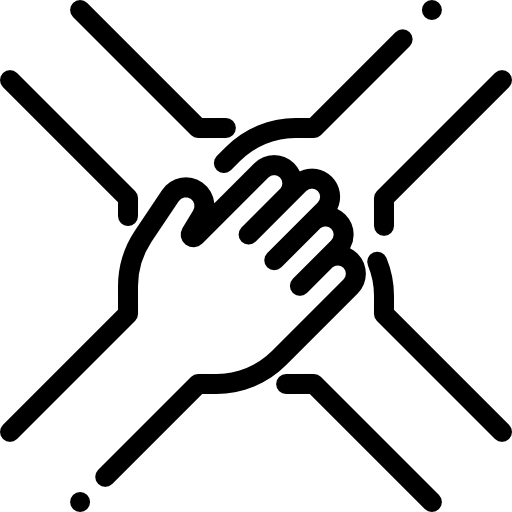

Sobre Nós
Técnologia

Iniciamos a 4Confort pensando
nas pessoas que
buscam conforto e elegância
no meio corporativo.
Acreditamos que calçados adaptáveis
são a melhor solução.
A tecnologia da 4 Conforts BOOST
é um produto criado pela
Innovation Team (AIT)
em parceria com a alemã BASF. Ela foi
criada para unir dois benefícios conflitantes
até então:
maciez e amortecimento responsivo.